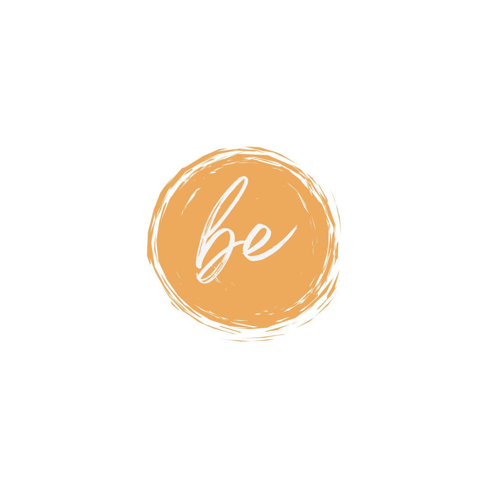

HOME

A BE é feita de pessoas para pessoas. Somos um conjunto de seres humanos com vidas distintas, experiências distintas, formações diferenciadas, mas que se interligam, na aprendizagem continua, na ligação com o outro e desejar o melhor para o outro.
A BE nasce da vontade de falar, simplificar, trazer para cima da mesa, qual tema seja. O objetivo é simplificar, normalizar, falar, tornar comum, para que o desconhecido passe a ser conhecido e que, mesmo não concordando, se saiba o que se fala.
O objetivo da BE é desconstruir para construir. E a BE é feita de pessoas em construção, que mutuamente se ajudam a construir e pretendem que todos, em conjunto, se construam.
Dessa forma, a BE será o que tu quiseres, o que nós quisermos.
Bem-vindo a esta caminhada. Seguimos juntos?
A BE nasce da vontade de falar, simplificar, trazer para cima da mesa, qual tema seja. O objetivo é simplificar, normalizar, falar, tornar comum, para que o desconhecido passe a ser conhecido e que, mesmo não concordando, se saiba o que se fala.
O objetivo da BE é desconstruir para construir. E a BE é feita de pessoas em construção, que mutuamente se ajudam a construir e pretendem que todos, em conjunto, se construam.
Dessa forma, a BE será o que tu quiseres, o que nós quisermos.
Bem-vindo a esta caminhada. Seguimos juntos?